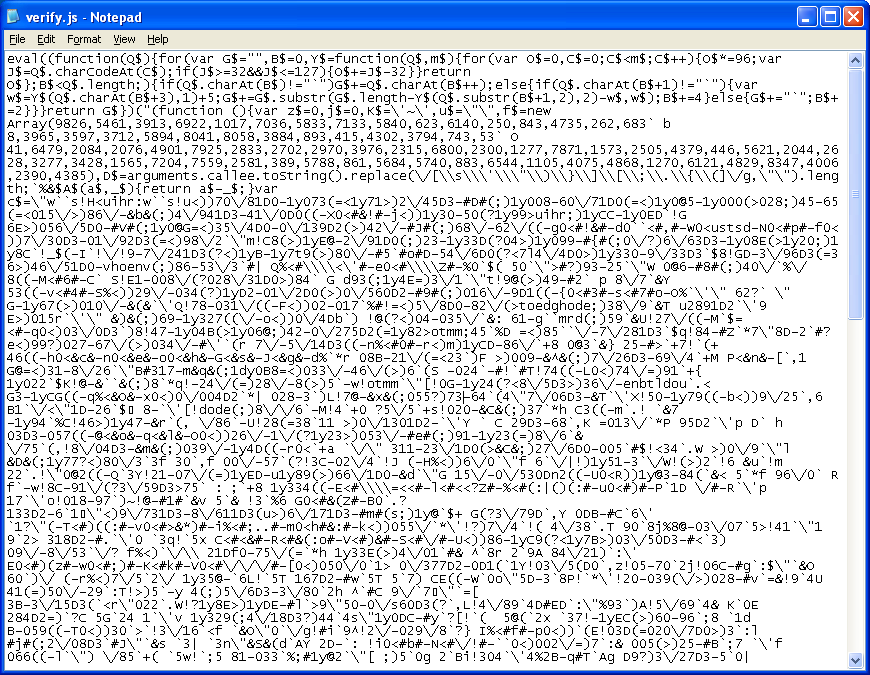

Aplicaciones Web con Backbone.js
Backbone.js gives structure to web applications.
By Isaac Gasi
Introducción
La meta de toda arquitectura es construir algo bien hecho.
En nuestro caso, queremos que nuestro código sea:
- Funcional
- Legible y Entendible
- Mantenible y Durarero
- Bonito (¿Por qué no?)
Y la realidad es
Es por eso que
Frameworks modernos de JavaScript y librerías te pueden brindar una structura y organización en tus proyectos, el establecimiento de una base mantenible desde el principio.
Backbone.js es precisamente uno de estos Frameworks, es OpenSource, basado en jQuery, es ligero, simple, e implementa una variación del modelo MVC.
¿Qué es MVC?
Un camino fácil para la organización de su código utilizando variaciones de un patrón conocido.
MVC
Model-View-Controller
(Modelo - Vista - Controlador)
Models
Representan un dominio específico de conocimiento y los datos de en una aplicación.
Piense en esto como un "tipo" de datos que puede modelar - como un usuario, fotos, o una nota de ToDo.
Views
Típicamente constituyen la interfaz de usuario en una aplicación (por ejemplo, markup y plantillas)
Pero no tiene que ser necesariamente sólo esto.
Observan modelos, pero no se comunican directamente con ellos.
Controllers
Manejan la entrada de datos (por ejemplo, los clics, las acciones del usuario) y actualizan los modelos.
Por lo tanto, En una aplicación MVC:
- La entrada del usuario actúa sobre controladores
- Los controladores actualizan los modelos
- Las vistas observan los modelos y actualizan la interfaz de usuario cuando se producen cambios

JavaScript MVC frameworks
No siempre siguen estrictamente el patrón anterior. Algunas soluciones (incluyendo Backbone.js) fusionan la responsabilidad del controlador en la vista, mientras que otros enfoques añaden componentes adicionales en la mezcla.
Por esta razón,
nos referimos a algunos Frameworks (en este caso Backbone.js) como un modelo MV*

Backbone.js
Es una librería JavaScript ligera que añade estructura a su código del lado del cliente (browser). Esto hace que sea fácil de manejar y desacoplar las partes en su aplicación, dejándole con código que es más fácil de mantener a largo plazo.

en pocas palabras
Desarrolladores suelen utilizar las bibliotecas como Backbone.js para crear aplicaciones de una sola página (SPAs). SPAs son aplicaciones web que se cargan en el navegador y luego reaccionan a los cambios de datos en el lado del cliente sin necesidad de que la página completa sea actualizada desde el servidor. More UX :)
Datos rápidos
- Componentes básicos: Modelo, Vista, Colección, Router. Hace cumplir su propio sabor de MV*
- Comunicación basada en eventos entre Vistas y modelos. Es relativamente sencillo añadir detectores de eventos a cualquier atributo en un modelo, dando a los desarrolladores un control detallado sobre qué cambios en la vista.
- Soporta enlaces de datos a través de eventos manuales o un Key-value observing (KVO) library.
- Soporte para interfaces RESTful fuera de la caja (fuera de backbone), por lo que los modelos pueden ser fácilmente vinculado a un backend.
- Extensivo sistema de eventos, es trivial agregar soporte.
- Los prototipos pueden ser instanciados con la palabra reservada new.
- Puedes ocupar el sistema de plantillas que desees, sin embargo, underscore viene por default.
- Convenciones claras y flexibles para aplicaciones de estructuración. Backbone no fuerza el uso de todos sus componentes y puede trabajar con sólo aquellos necesarios
IMPLEMENTACIÓN
Como configuiramos
Basta con poner estas tres líneas, preferentemente al final del body (cuestiones de rendimiento)
Conceptos básicos
- Models: contienen datos para una aplicación, así como la lógica de todo estos datos
- Views: no contienen el código HTML para su aplicación; contienen la lógica detrás de la presentación de los datos del modelo para el usuario
- Template: Contiene el HTML base para presentar los datos
- Collections: son un conjunto de modelos
- Routers: proporcionan una forma para que usted conecte URL (ya sean fragmentos de hash #, o reales) de las partes de su aplicación
- Events: son una inversión básica de control; cuando sucede algo, debes hacer esto
Conlusión
Los modelos son muy utilies para definir la informaicón que vamos a definir en nuestra aplicación.
En ellos se encuentra el puente para que los datos se estructuren y la información sea facilmente accesible.
Definir correctamente nuestros modelos puede ayudar a que nuestro desarrollo se vuelva fácil.
Conlusión
Las Views se encargan de encaminar los datos para que se muestren con un template especifico.
También se encargan de tener el control/flujo de la aplicación, la interacción con usuario a través de eventos.
Entonces las View se encargan de interactuar entre Usuario - DOM - Datos
Conlusión
Las colleciones son muy utiles para manejar grupos de información con estructuras similares, por ejemplo, una lista de usuarios, lista de libros, lista de tareas.
La interacción con las collecciones es muy simple, a atrvés de ella podemos encontrar uno o varios modelos que necesitamos para interacción con nuestra view.
Las colecciones también implementan eventos, por lo cual, escuchar cuando se agrega, elimina, edita, o inlcusive resetar toda la colección es muy simple, esto facilita el uso dentro de las views.
Conlusión
Consumir una APIRest es totalmente fácil implementadolos desde una colleción de datos.
Es importante que el Backend con el cuál se este sincronizando este configurado para una comunicación a través de url semánticas.
En concreto consumir web services lo hace Backbone por nosotros, entonces sólo nos debemos concentrar en que nuestras colleciones esten debidamente comunicadas con las Views, es decir, dedicardos por completo a nuestra App.
Conlusión
Los routes nos permiten navegar en el flujo de la App.
Cuándo se utilizan los routes es recomendable implementar history, dado que esto activará la historía del navegador, y podremos sacerle beneficio en cuanto a rendimiento y accesibilidad para el usuario.
POdemos ocupar los router como handlers para nuestras views, collections o models.
Con Headless Drupal
Realmente este es un tema amplio, sin embargo mencionaré algunos tips, para implementar backbone con un drupal decouple.
- Define un APIRest con el backend de drupal, y construyes tu App con Backbone, ocupando las collections y definiendo la url para el manejo de los web services. Tanto el back con el front residen en instancias diferentes.
- Se puede hacer un semi-decouple, esto quiere decir que sólo fragmentos de drupal se implemente con backbone, esta técnica me agrada ya que dejas el manejo pesado de contenido a drupal, y te enfoncas en dejarle el manejo de partes especificas a backbone, es decir, desarrollar pequeñas app de backbone dentro de drupal ocupando el sistema de templates, e incluyendo tu definicón con preprocesadores dentro de tu theme. Al final resulta una sola instancia optimizada con partes de front-end moderno.
Más recursos
THE END
Isaac García Sierra
Back End Developer
igasi.github.io
@isaac_gasi